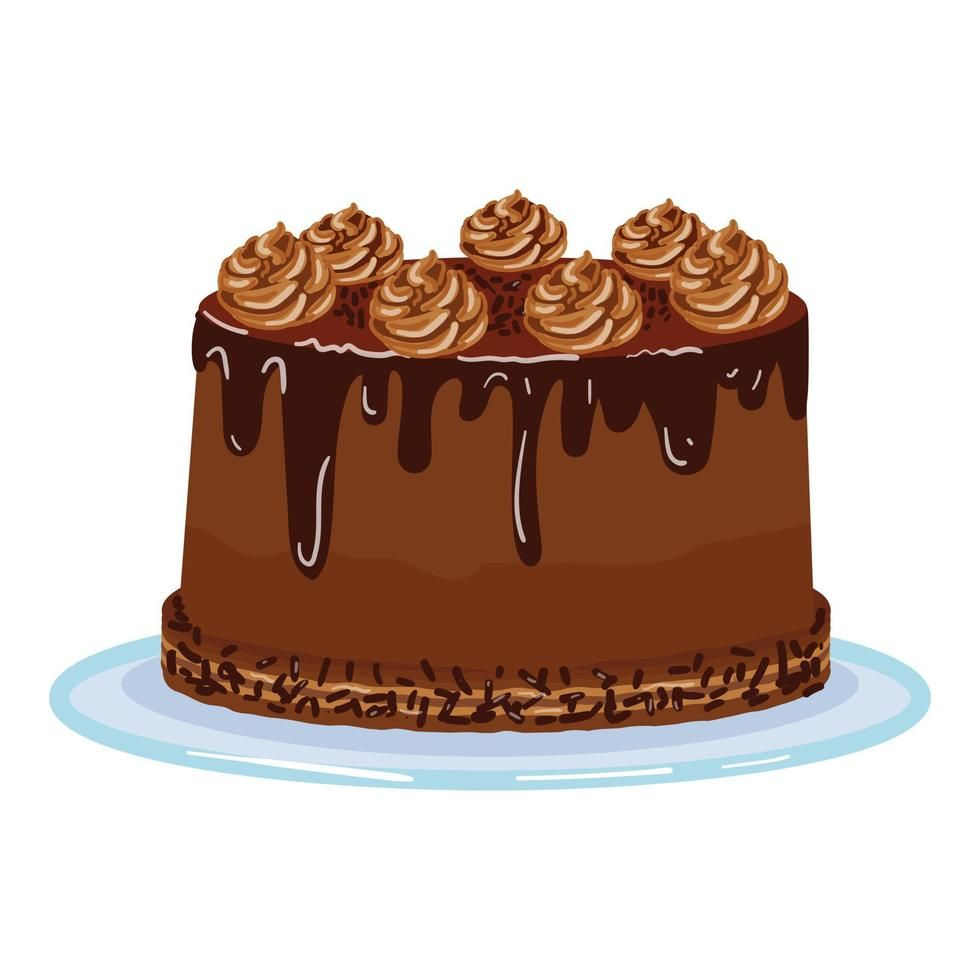
Pastel de Chocolate
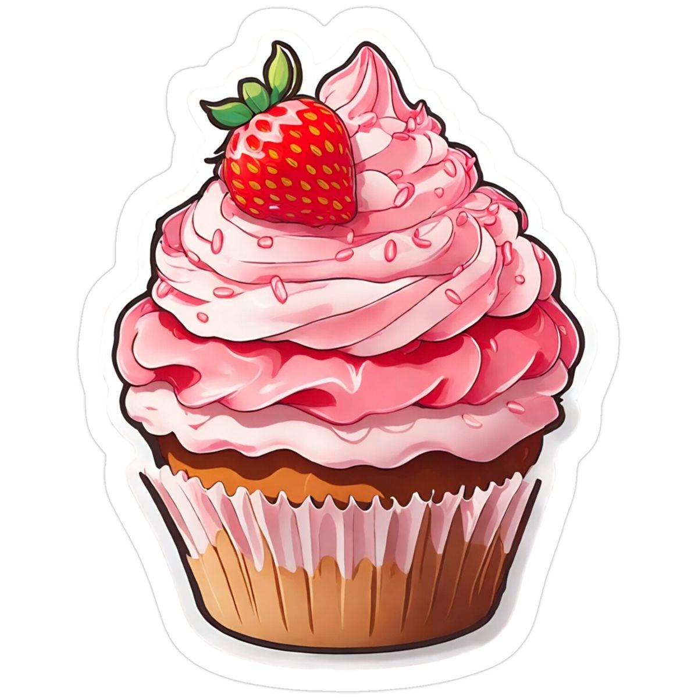
Cupcake de Fresa
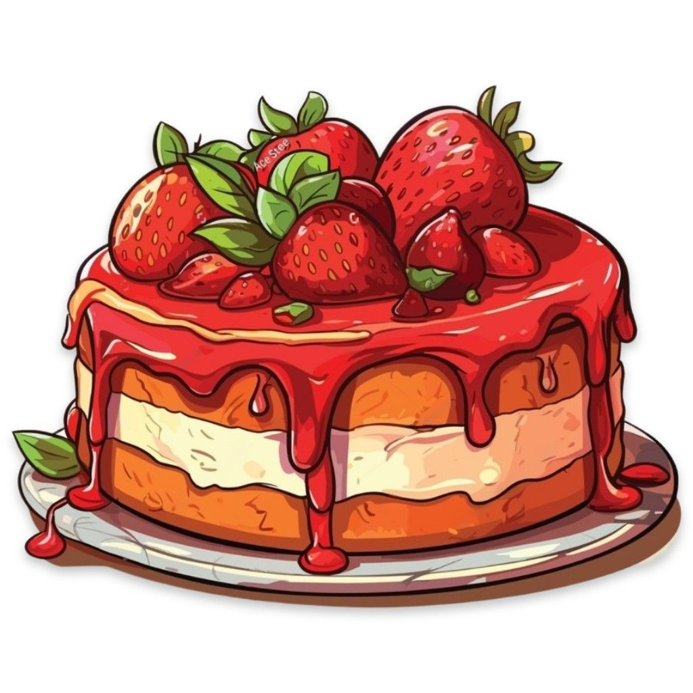
Tarta de Fresas

Mousse de Fresa
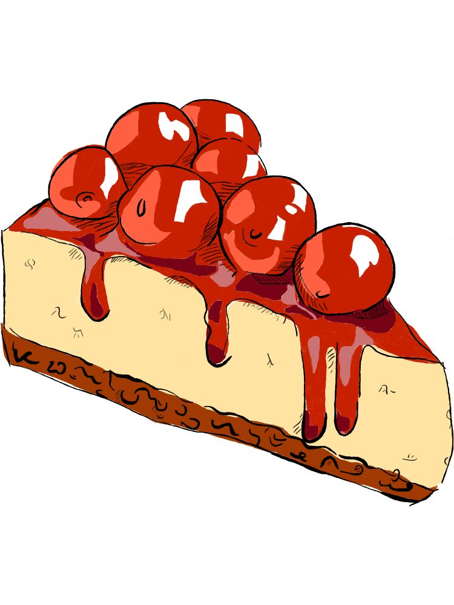
Cheesecake de Vainilla
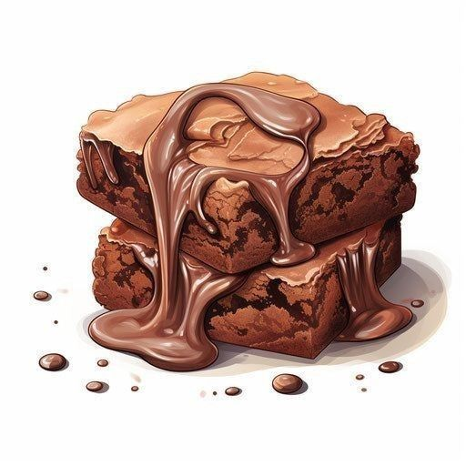
Brownies

Galletas con Chispas

Flan Napolitano

Helado de Mango
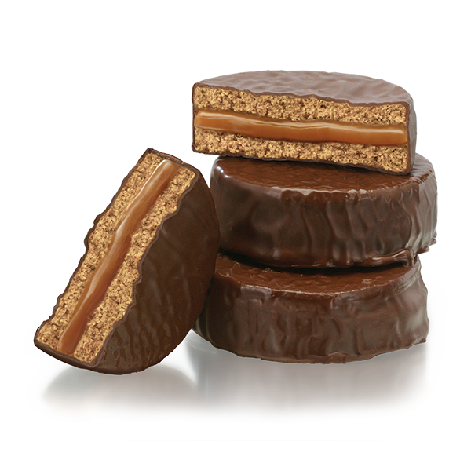
Alfajores

Cake Pops
Caramelos
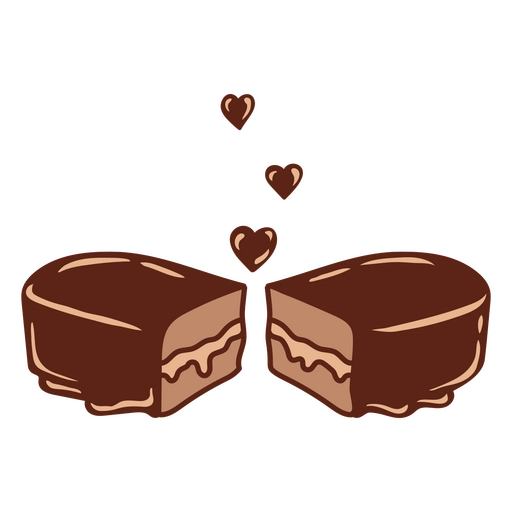
Bombones de Chocolate
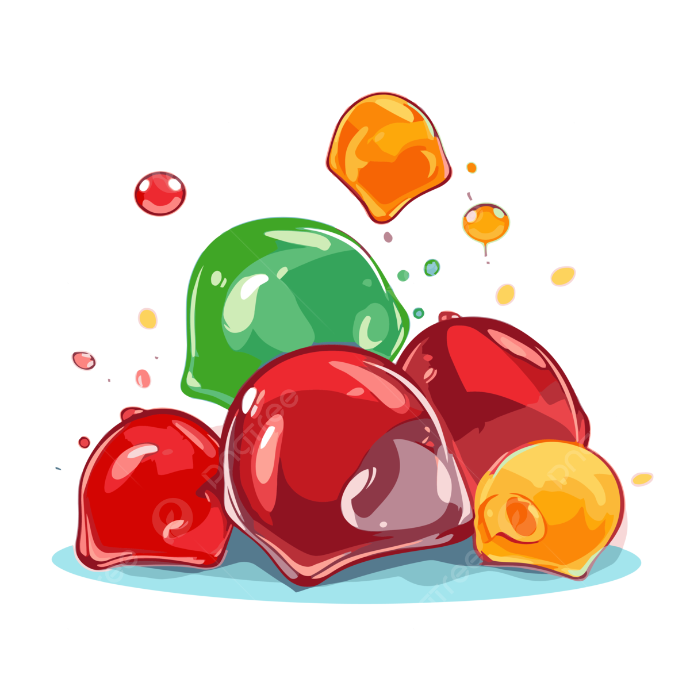
Gomitas Caseras
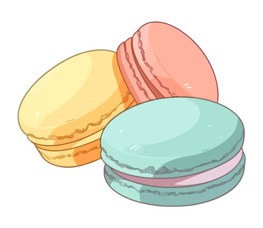
Macarons
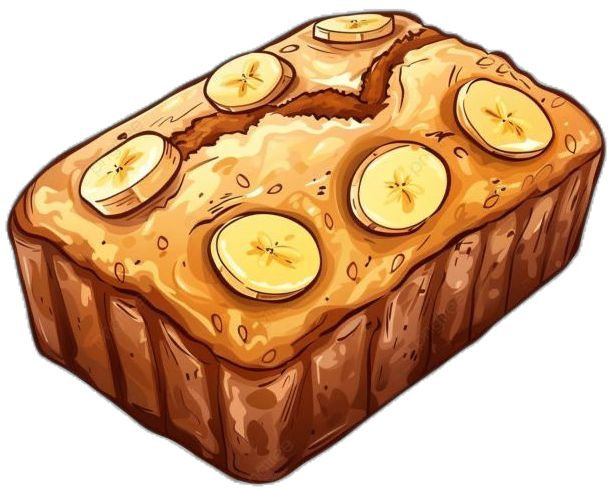
Panqués
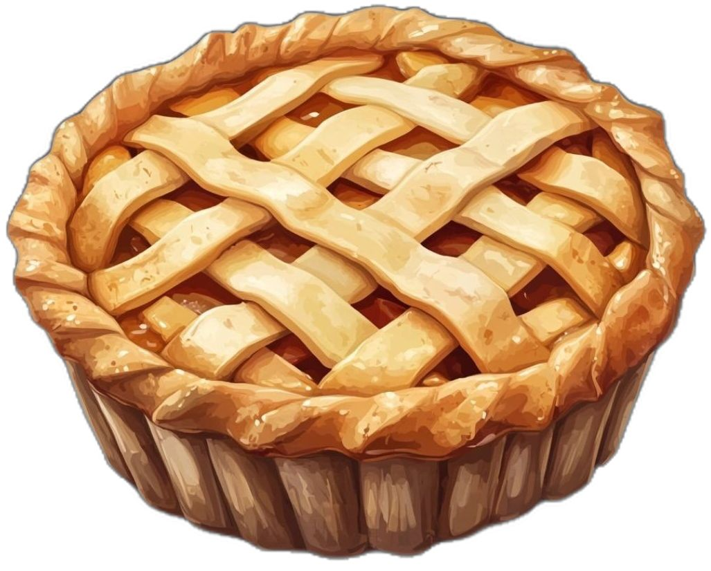
Pay de Manzana
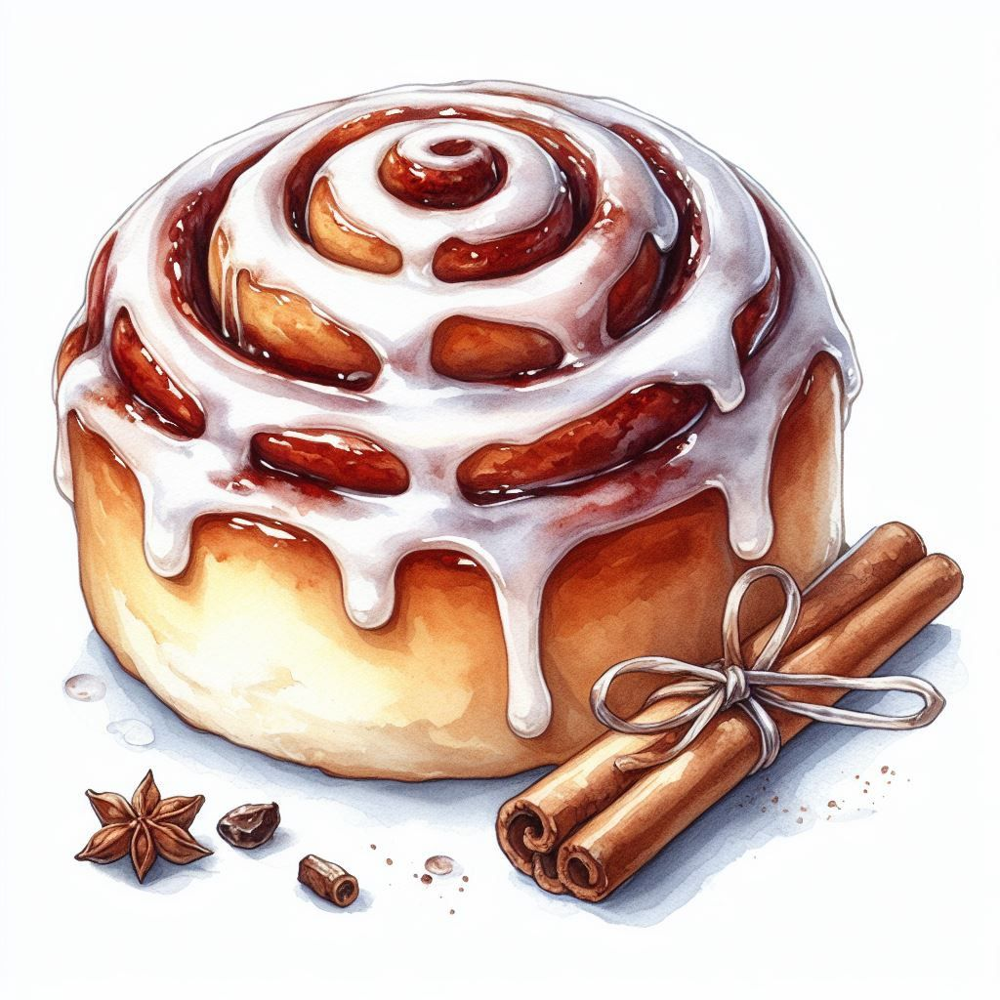
Roles de Canela
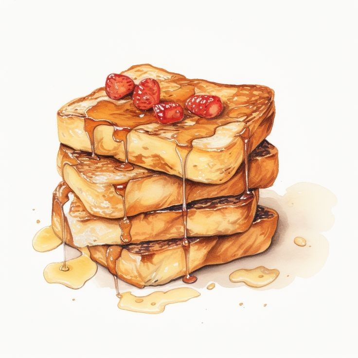
Tostadas Dulces
×

Ingredientes:
Preparación: